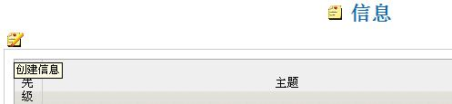

发送系统消息 |
系统提供了一个小小的消息系统使用户无需电子邮件也可快速。
这种类型的通信是调用程序内部和无法从外部客户访问的信息系统。
每个消息由至少三部分组成：地址（由用户名称定义），对象（消息的标题）和内容。
除此之外还可以指定一些行为，如确认消息的接收，有效期（按天）
和消息的优先级别。
| 内嵌消息系统无意取代传统的电子邮件，只是用于文档库中文档相关的信息交流。 | |
为发送消息，首先必须知道要联系用户的准确用户名称。
为进入消息管理页面，可点击主菜单【个人信息】->【消息】菜单。
为创建新消息，请点击创建消息图标。

接着出现输入界面。

带星号（*）的字段必须输入。
接收方字段是必填的，输入接受者的用户名。
主题字段是必填的，是本消息的概括描述。
复选框"确认"是为了让系统通知发件人对方已读到消息。
消息字段提供了大块的文本输入区，用于输入消息主体。
点击[保存]，系统保存消息，接受方将在消息管理中看到对应消息
（个人-->消息）。